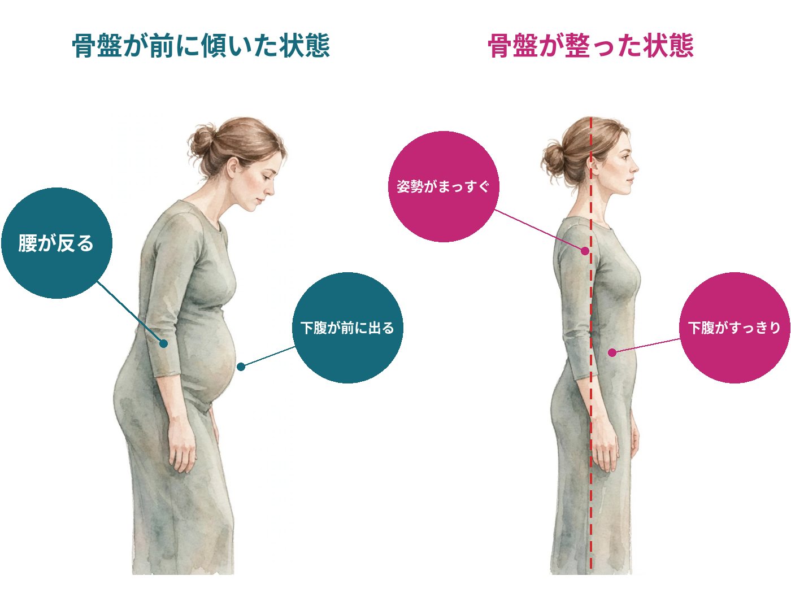

下腹のぽっこり
美容整体ステラ・ポラリス東三国｜大阪市淀川区東三国・東三国駅徒歩5分・女性向け

前に出る下腹を、骨盤の位置から整えてすっきりへ
体重は変わらないのに、下腹だけがぽっこり出て見える——その原因の一つが、骨盤の傾きと姿勢です。骨盤が前に傾くと内臓の位置が下がりやすく、下腹が前に押し出されたように見えます。反対に、骨盤が整った姿勢では、下腹は自然とすっきり見えるものです。このページでは、下腹が前に出て見える仕組みと、骨盤から整えてすっきりしたラインを目指す当サロンでのケア、ご自宅でできるセルフケアをご案内します。食事量は変わらないのにスカートのウエストがきつく感じる、そんな経験はありませんか。下腹の見え方は、日々の姿勢の記録でもあります。
ご予約はこちら（Coubic）こんなお悩みありませんか
- 体重は変わらないのに、下腹だけ出て見える
- 腰が反っていて、壁に立つと腰の後ろにすき間が大きい
- 太ももの前側が張って、硬く感じる
- ボトムスのウエストは合うのに、下腹まわりが気になる
- お尻が下がって見える気がする
- 姿勢を正すと、下腹が引っ込んで見える気がする
- 夕方になると、下腹の張りが増す感じがする
当てはまる項目が多いほど、骨盤の傾きと姿勢の影響で、下腹が前に出て見えやすい目安とされています。下腹は脂肪だけの問題ではありません。次のセルフチェックで、骨盤の傾きの傾向を確かめてみましょう。下腹の見え方は、朝と夕方でも変わります。夕方に張りが増す方は、巡りと姿勢の両方が関わっている目安です。
簡単セルフチェック（壁チェック）
壁を使って、骨盤の傾きと腰の反りを確かめる簡単な方法です。
- 壁に背を向けて立ち、かかと・お尻・背中・後頭部を壁につけます。
- 腰と壁の間のすき間に、手を差し入れてみます。
- 手のひら以上のすき間がある場合は、骨盤が前に傾いて腰が反りやすい目安と言われています。
※これは診断ではありません。ご自身の状態の傾向を知る目安としてお使いください。
下腹のぽっこりの原因と仕組み
骨盤の前傾と下腹の見え方
骨盤が前に傾くと、腰は反り、お腹の内容物は前下方へ押される形になります。その結果、体重が変わらなくても下腹がぽっこり前に出て見えるのです。図1のように、骨盤の角度ひとつで、お腹のラインの見え方は大きく変わります。下腹対策の土台は、骨盤の位置です。

図1 骨盤の傾きと下腹の見え方の関係、骨盤が整った状態のイメージ。体の状態には個人差があります。
太ももの前とお腹の筋肉のバランス
骨盤が前に傾いた姿勢では、太ももの前側の筋肉が縮んで張りやすく、お腹まわりの筋肉は使われにくくなります。この前後のバランスの崩れが、傾きを定着させます。前側をゆるめることと、お腹の支える力を取り戻すことの両方が大切です。太ももの前の張りが強い方は、立つときに腰が反りやすい傾向があります。前側をゆるめるケアは、骨盤の傾き対策としても大切です。
お尻の筋肉との関わり
骨盤を後ろから支えるお尻の筋肉が使われにくくなると、骨盤は前に傾きやすくなり、お尻も下がって見えます。下腹とお尻は、骨盤をはさんだ表裏の関係です。一緒に整えることで、ライン全体の印象が変わります。
内臓の位置と巡り
姿勢が崩れると、お腹まわりの巡りも滞りやすく、夕方の張り感につながることがあります。下腹のぽっこりは、見え方の問題であると同時に、巡りの問題でもあります。骨盤を整え、巡りを助ける視点がケアの柱です。
セルフケアで足りる場合・サロンケアが向く場合
ぽっこりが軽く、姿勢を意識すると下腹の見え方が変わる感覚がある場合は、まずご自宅でのセルフケアを続けて様子を見る方法があります。一方で、太ももの前の張りが強く自分ではゆるめにくい、骨盤の傾きをプロの目で確認したい、腰の反りもセットで気になるという場合は、サロンでのケアが向いている目安になります。サロンでは、骨盤まわりから全身のバランスを整え、施術後に「下腹がすっきり見える」「姿勢が伸びた」と感じやすい状態を目指します。どちらが正解というものではなく、今の状態に合わせて選ぶことが大切です。施術の前後で、壁チェックの感覚の違いを一緒に確認することもできます。
当サロンでのケア
当サロンの下腹ケアは、「骨盤の位置から整え、下腹がすっきり見える姿勢」を目指す組み立てです。まず骨盤の傾きと姿勢のクセを一緒に確認し、部位と目的に合わせて3つの手技を組み合わせます。
美容整体：骨盤の傾きと背骨のラインを整え、下腹が前に出にくい姿勢の土台をつくることを目的に。立つ姿勢の違いを一緒に確認しながら進めます。
アロマオイルマッサージ：腰やお尻、太ももまわりをオイルでゆるめ、巡りが流れやすい状態を目指します。張りやすい太ももの前側にもアプローチします。
もみほぐし：固まりやすい腰やお尻の筋肉をほぐし、骨盤まわりの動きを引き出すことを目的に進めます。
ケアを通して目指すのは、こんな変化です。
- 下腹がすっきり見える、姿勢のラインへ
- 骨盤が整って、腰の反りがやわらぐ感覚へ
- 太ももの前の張りがゆるみ、脚が軽く感じる状態へ
- お尻の位置が上がって見える、後ろ姿の印象へ
- 骨盤を立てる感覚を知り、日常でも保ちやすい状態へ
施術の仕上げには、骨盤を立てる立ち方のコツや、お腹の支える力を使う簡単な体操もお伝えします。下腹のラインは、姿勢の積み重ねで育ちます。日々の小さな意識が、ラインを支えます。下腹のラインづくりは、特別な運動より先に、毎日の立つ・座る姿勢から始まります。

施術の流れ
ご来店後、気になる部位やお悩み、ご希望の強さなどをうかがいます。完全個室のため、周りを気にせずお話しいただけます。
骨盤の傾きや腰の反り、姿勢のクセなどを一緒に確認し、その日の状態に合わせた施術の進め方をご案内します。
美容整体を中心に、ご希望に応じてアロマオイルマッサージ、もみほぐしを組み合わせて進めます。強さは途中でも調整できます。
施術後の状態を確認し、ご自宅で続けやすいセルフケアのポイントをお伝えします。次回の目安についても、ご希望があればご案内します。
料金
| コース | 通常価格 | キャンペーン価格（12/25まで） |
|---|---|---|
| 80分 | 8,000円 | 3,000円 |
| 100分 | 10,000円 | 4,000円 |
| 120分 | 12,000円 | 5,000円 |
クリスマスキャンペーンは12月25日まで、ご新規様もリピーターの方も対象です。施術内容は当日の状態とご希望に合わせて組み立てます。
ご自宅でできるセルフケア
- 骨盤ゆらし：仰向けで膝を立て、骨盤を前後にゆっくりゆらします。各10回、寝る前の習慣にすると続けやすくなります。
- 太ももの前側ストレッチ：壁に手をついて立ち、片足の甲を持って太ももの前を伸ばします。左右30秒ずつが目安です。
- お腹の引き上げ体操：立ったまま、息を吐きながらお腹をへこませて5秒キープします。5回を目安に、お腹の支える力を意識してください。
- お尻の体操：仰向けで膝を立て、お尻を持ち上げて5秒キープします。10回を目安に、お尻の筋肉を使う感覚を覚えます。
ご自宅でのケアに：セルフケア資料ライブラリ（無料）
このお悩みに合わせたセルフケアの考え方を、無料の資料ライブラリでご紹介しています。
セルフケア資料ライブラリを開く →
受診の目安
下腹の張りに加えて、痛みやしこり、急な体型の変化がある場合や、婦人科系の気になる症状がある場合は、施術の前に医療機関への受診をおすすめします。当サロンのケアは姿勢と見え方に関するもので、診察に代わるものではありません。気になることがあるときは、まず医療機関でご相談ください。
よくある質問
Q. 初めてでも大丈夫ですか？
はい。当サロンは完全予約制・完全個室で、1日3組までのご案内です。最初にカウンセリングで姿勢のクセや気になる部位をうかがい、無理のない内容から始めます。施術の前後で「姿勢が伸びた」「下腹がすっきり見える」といった感覚の違いを一緒に確認しながら進めますので、初めての方も安心してご利用いただけます。
Q. 施術は痛いですか？
強さは、ご希望をうかがいながら調整します。骨盤まわりを無理に動かすのではなく、筋肉をゆるめて整える進め方です。感じ方には個人差がありますので、施術中も遠慮なくお声がけください。
Q. コースはどう選べばいいですか？
80分・100分・120分のコースがあり、ケアしたい部位の広さやお時間のご都合に合わせて選べます。骨盤まわりから腰、太ももまでゆっくり整えたい方には、100分が選ばれることが多いコースです。迷われる場合は、ご予約の際にお気軽にご相談ください。
Q. 場所と予約方法を教えてください。
大阪市淀川区東三国、東三国駅から徒歩5分です。完全予約制のため、予約サイト（Coubic）またはLINE公式アカウントからご予約をお願いしています。
Q. 男性も受けられますか？
当サロンは女性向けのため、男性の方は、同じ東三国の男性専用整体院「北辰堂」をご案内しています。
施術者について
平賀建人（施術歴30年）
鍼灸師・登録販売者・アロマセラピスト・パーソナルトレーナーの資格を持ち、美容整体を中心に、アロマオイルマッサージ、もみほぐしを、その日の状態とご希望に合わせて組み合わせて施術します。このページの内容は、施術者の知識と経験をもとに作成しています。

料金・ご予約
ご新規様もリピーターの方も 12/25まで
80分 3,000円／100分 4,000円／120分 5,000円
通常価格は80分8,000円／100分10,000円／120分12,000円です。施術内容はご希望に合わせて組み立てます。
営業時間：月〜土 17:00〜23:00／日 10:00〜23:00（完全予約制）｜電話：080-2468-3086
大阪府大阪市淀川区東三国2丁目25番4号101（東三国駅徒歩5分）